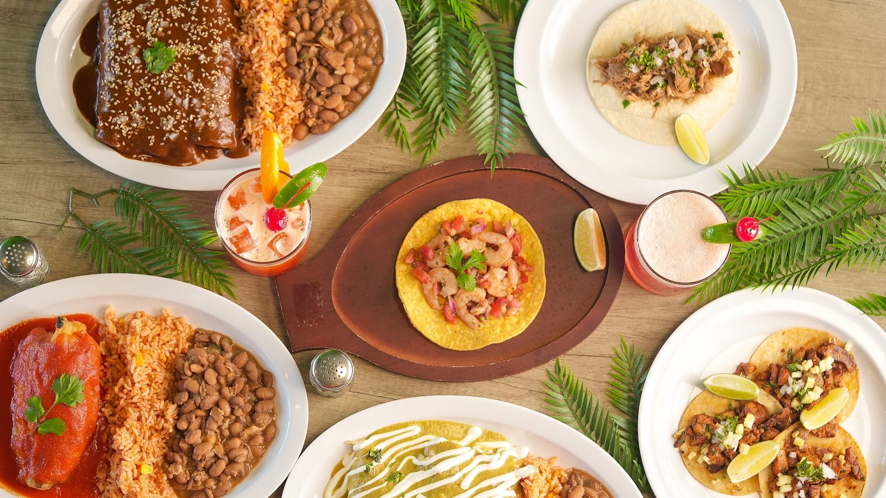

Tacos
Street tacos on homemade corn tortillas, with spicy salsas. Mole, chicken tinga, chorizo and more.
Tacos and margaritas · Bee Cave, TX
Spicy salsas, house margaritas and a laid-back room on Ranch Road 620.

What to order
Tacos, plates and the bar.
Street tacos on homemade corn tortillas, with spicy salsas. Mole, chicken tinga, chorizo and more.

Enchiladas in tangy green sauce, picadillo, rice and beans. Filling, tasty plates.

Classic margaritas and signature cocktails. House margaritas made top shelf.
4.7 ★ · 467 Google reviews
Wow! Food and service were amazing! Glad we stopped in. Friendly staff Brandon Matthew and Jaime were hospitable and gave great recommendations! House margaritas were top shelf style! Thank you!!!!
We're from El Paso and we know finding good Mexican food around here is very limited. We were very pleased! The salsas were spicy and delicious. The plates were filling and tasty! Flan---chefs kiss! A little expensive for me, but we're ok vacation--why not?!
Taco Margarita in Bee Cave was an awesome find! The food was absolutely delicious, and the service was fantastic from start to finish. The atmosphere is laid back and welcoming, making it a great place to relax and enjoy a meal with friends or family. The tacos were packed with flavor, and the chips and salsa were the perfect way to start the meal.
Nuestra historia
Flavors of Mexico with a modern twist, with produce and meats sourced from Mexico. Tacos, burritos, huevos plates, classic margaritas and signature cocktails.
Bright blue walls, papel picado banners and TVs over the bar. Friendly staff. Picnic tables outside under string lights.

Ven a vernos
3620 Ranch Rd 620 S #350, Austin, TX 78738
In the shopping center on Ranch Road 620 South. Order takeout and delivery online.